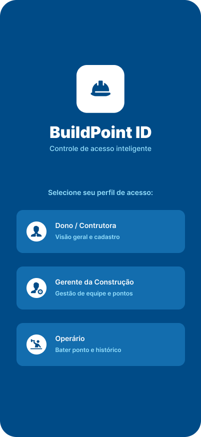
Início / Splash
Gestão inteligente de ponto
Requisitos, modelagem UML/BPMN e guia dos repositórios — visual alinhado ao Figma BuildPoint.
Paleta, tipografia e fluxos do app peão extraídos do arquivo BuildPoint no Figma — navy profundo, azul de ação e superfícies pastel.
Arquivos da pasta figma/ do projeto.

Início / Splash
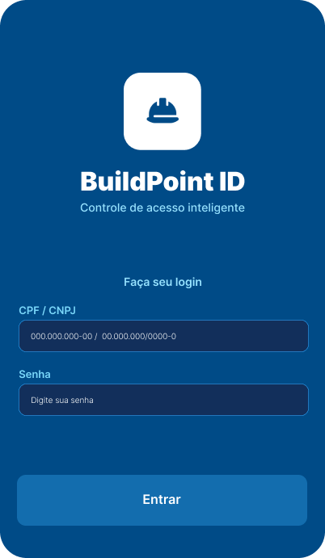
Login
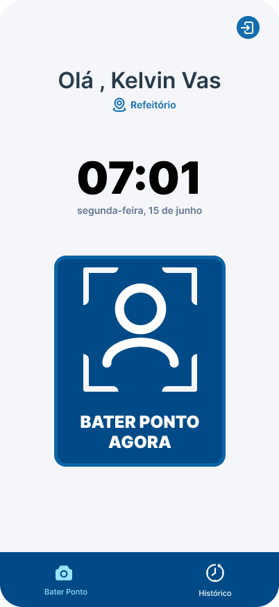
Home do Operário
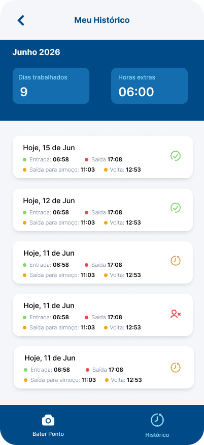
Histórico

Instrução Face ID
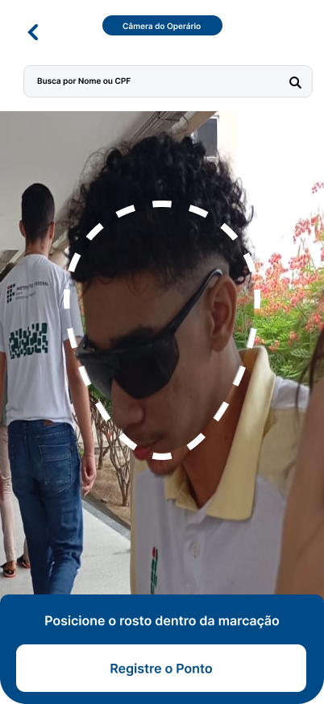
Câmara do Operário
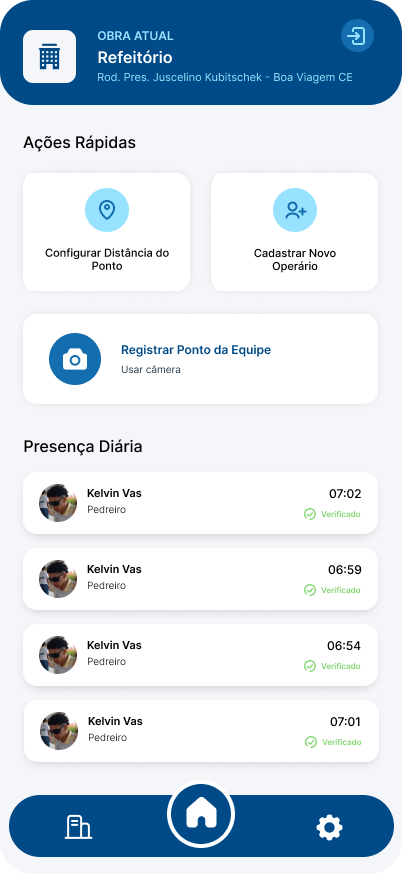
Home do Gerente
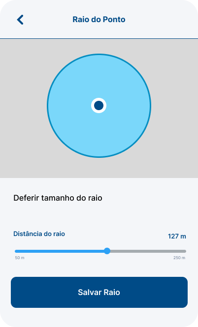
Mudar raio do ponto
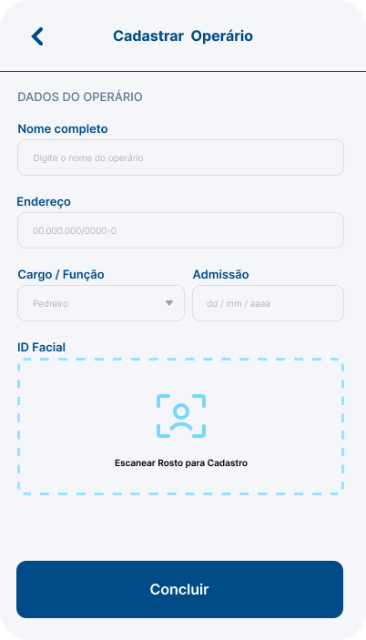
Cadastro de Operário
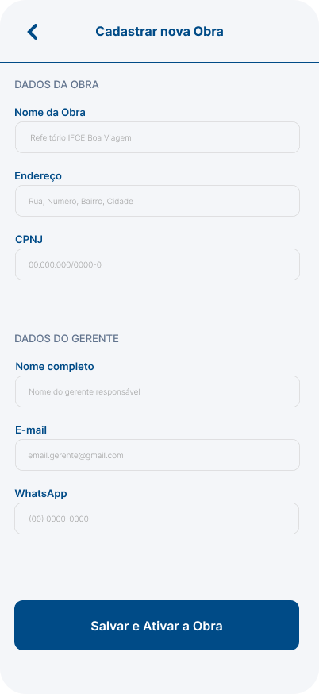
Cadastro de Obra
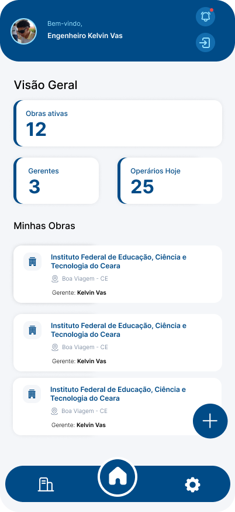
Perfil Dono
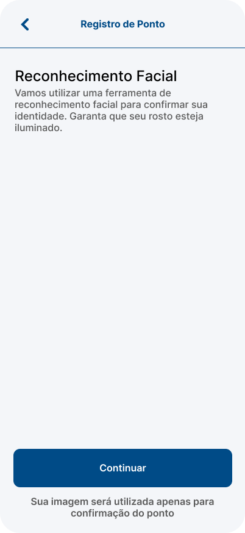
Bater ponto (Gerente)
O BuildPoint ID é um sistema de controle de ponto eletrônico descentralizado para canteiros de obras, com painel Web corporativo e apps móveis que validam presença por reconhecimento facial e cerca virtual de 5 metros.
| Ator | Tipo | Descrição |
|---|---|---|
| Dono | Primário | Admin master no painel Web: obras, gerentes e dashboard |
| Gerente | Primário | Campo: cerca virtual, cadastro de peões e contingência |
| Peão | Primário | Bate ponto por Face ID e consulta histórico |
| API Face ID | Secundário | Processa vetores faciais e valida identidade |
| Sistema GPS | Secundário | Valida marcação dentro do raio de 5 m |
Completo e coerente com a Etapa 2.
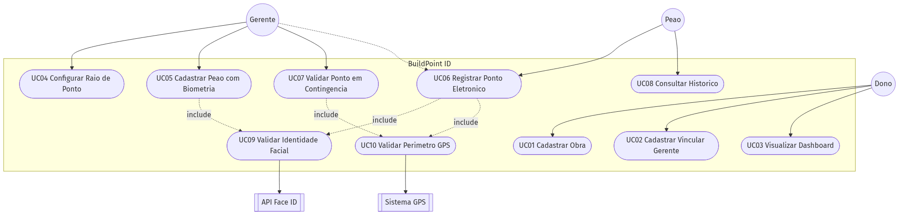
| Caso de uso | Dono | Gerente | Peão | Externo |
|---|---|---|---|---|
| UC01 Cadastrar Obra | ● | |||
| UC02 Vincular Gerente | ● | |||
| UC03 Dashboard | ● | |||
| UC04 Configurar Raio | ● | GPS | ||
| UC05 Cadastrar Peão | ● | Face ID | ||
| UC06 Registrar Ponto | ○ | ● | Face + GPS | |
| UC07 Contingência | ● | GPS | ||
| UC08 Histórico | ● |
| ID | Descrição | Ator | Prioridade | CDU |
|---|---|---|---|---|
| RF01 | Cadastro, edição e exclusão de canteiros de obras | Dono | Essencial | UC01 |
| RF02 | Cadastrar gerentes e vinculá-los a obras | Dono | Essencial | UC02 |
| RF03 | Dashboard com métricas de custos e frequência | Dono | Importante | UC03 |
| RF04 | Delimitar cerca virtual (raio de 5 m) para batida | Gerente | Essencial | UC04 |
| RF05 | Cadastrar peão com biometria facial (enrolment) | Gerente | Essencial | UC05 |
| RF06 | Validar/efetuar ponto em contingência | Gerente | Importante | UC07 |
| RF07 | Marcar ponto por reconhecimento facial no app | Peão | Essencial | UC06 |
| RF08 | Validar GPS e bloquear fora do raio da obra | Peão / Sistema | Essencial | UC06, UC10 |
| RF09 | Visualizar histórico / espelho de ponto | Peão | Essencial | UC08 |
| ID | Categoria | Descrição |
|---|---|---|
| RNF01 | Segurança jurídica | Logs de ponto com inviolabilidade (Portaria 671/MTE) |
| RNF02 | Desempenho / IA | Face ID em até 3 s; tolerante a luminosidade e EPIs |
| RNF03 | Confiabilidade | Geofencing estrito de 5 metros |
| RNF04 | Arquitetura | Node.js + Firebase; sync em tempo real e modo offline |
| RNF05 | Usabilidade | Batida de ponto em no máximo 2 cliques |
| RNF06 | Disponibilidade | Suportar pico de marcações no início do turno |
| RNF07 | Privacidade | Biometria como dado sensível (LGPD) |
| ID | Descrição | Tela Figma |
|---|---|---|
| RI01 | CTA central de destaque para iniciar câmera / bater ponto | Home · BATER PONTO AGORA |
| RI02 | Feedback claro de GPS / perímetro antes da marcação | Fluxo Face ID |
| RI03 | Painéis e cards limpos, responsivos, com hierarquia azul | Histórico / Dashboard |
| ID | Descrição |
|---|---|
| RS01 | RBAC: Peões/Gerentes sem acesso ao dashboard financeiro do Dono |
| RS02 | Armazenar apenas hash/vetor facial criptografado (sem foto pura) |
| RS03 | Log imutável: trabalhador, data/hora, GPS e confiança do Face ID |
| ID | Descrição |
|---|---|
| RT01 | Teste de estresse no pico de batidas (ex.: 07:00) |
| RT02 | Testes de campo com sol forte, fim de tarde e EPIs |
| RT03 | Simulação de GPS spoofing fora da cerca de 5 m |
Mínimo 3 — entregues 5, com fluxos e pré/pós-condições.
Ator: Dono · Pré: autenticado no painel Web · Pós: obra persistida e gerente vinculado.
Fluxo: Obras → Cadastrar Nova Obra → nome/endereço/coordenadas → selecionar gerente → Salvar.
Alternativas: gerente inexistente (cadastro inline); campos vazios (bloqueio).
Ator: Gerente · Pré: logado e no canteiro · Pós: cerca de 5 m atualizada.
Fluxo: Configurações → Registrar Raio → GPS → confirmar → Salvar Perímetro.
Alternativa: GPS fraco (> 10 m) → alta precisão / céu aberto.
Ator: Gerente · Pós: peão com vetor facial válido.
Fluxo: Trabalhadores → dados → capturar biometria → extrair vetores → Firebase.
Alternativa: pouca luz / EPI obstruindo → nova captura.
Atores: Peão (principal), Gerente (contingência).
Fluxo Figma: Home → BATER PONTO AGORA → moldura facial → confirmação Tudo certo!.
Regras: GPS 5 m · Face ID ≤ 3 s · offline com sync · log imutável.
Ator: Peão · Tela Figma Meus Registros (horas do dia / mês + lista).
Alternativa: sem registros → mensagem amigável.
Entidades, atributos, relacionamentos e multiplicidades.
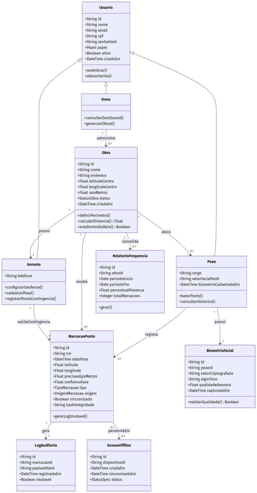
| Relacionamento | Multiplicidade | Regra |
|---|---|---|
| Dono → Obra | 1 : 0..* | Um dono administra várias obras |
| Obra → Gerente | 1 : 1 | Uma obra, um gerente no MVP |
| Obra → Peão | 1 : 0..* | Vários peões por obra |
| Peão → BiometriaFacial | 1 : 1 | Um vetor ativo (sem imagem pura) |
| Peão → MarcacaoPonto | 1 : 0..* | Histórico de batidas |
| MarcacaoPonto → LogAuditoria | 1 : 1 | Log imutável (Portaria 671) |
Mínimo 2 — entregues 3.
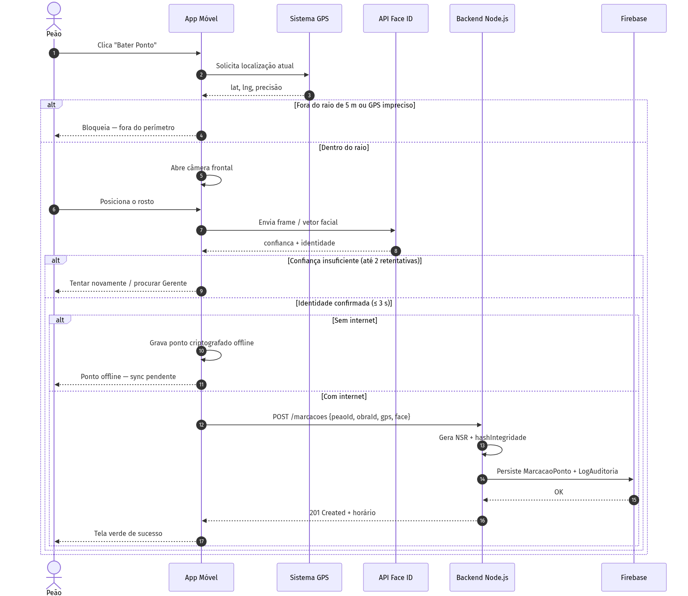
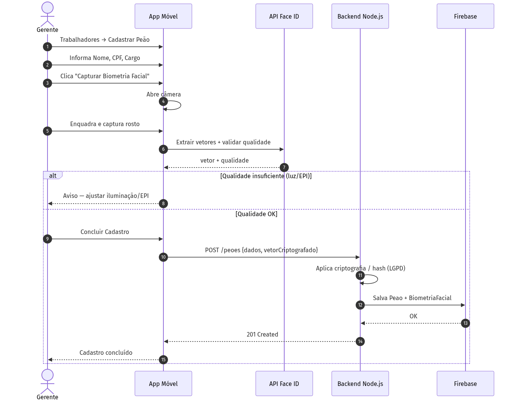
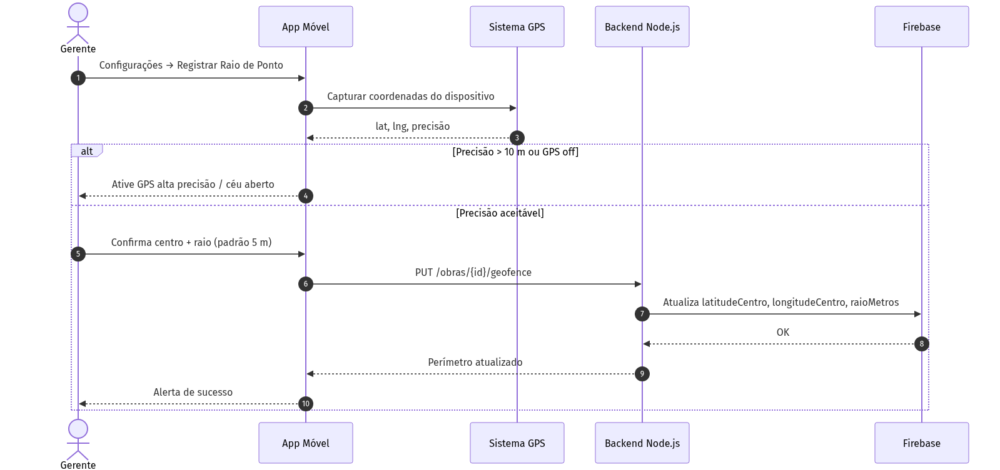
Fluxo de processo modelado.
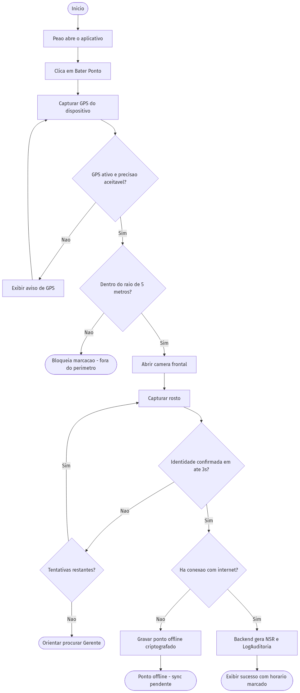
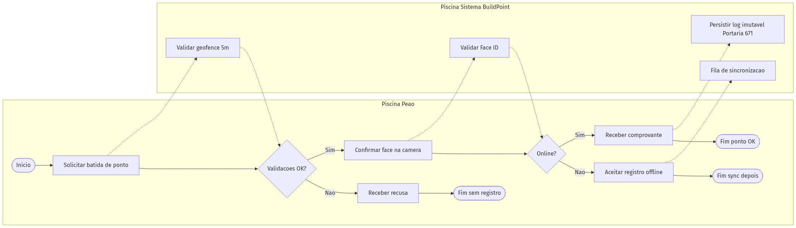
Documentação no GitHub com branch etapa-3 + PR.
etapa-3 + pasta docs/ com esta documentação./health).git push -u origin etapa-3 → Pull Request etapa-3 → main.Detalhamento em docs/02-passo-a-passo-repositorios.md.
| Entregável | Status |
|---|---|
| Diagrama de Casos de Uso | Incluído |
| Especificações textuais de CDU (mín. 3) | 5 UCs detalhados |
| Diagrama de Classes | Incluído |
| Diagramas de Sequência (mín. 2) | 3 diagramas |
| Diagrama de Atividades / BPMN | Incluído |
| Documentação no GitHub (branch etapa-3 + PR) | Ver guia de repositórios |